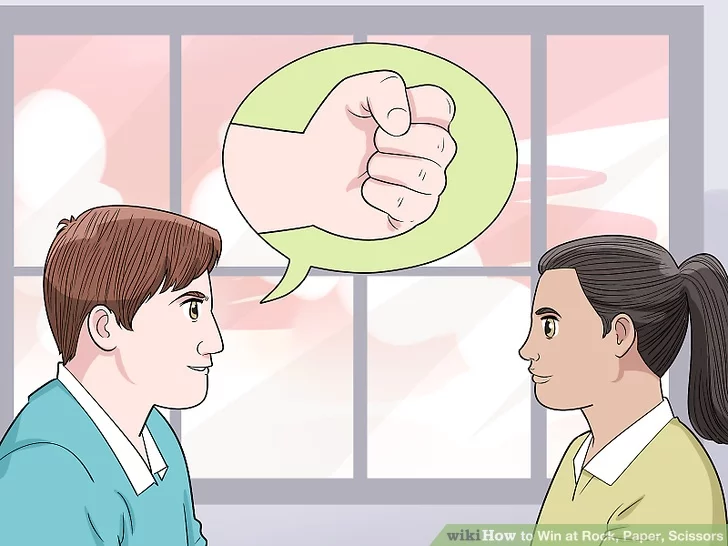
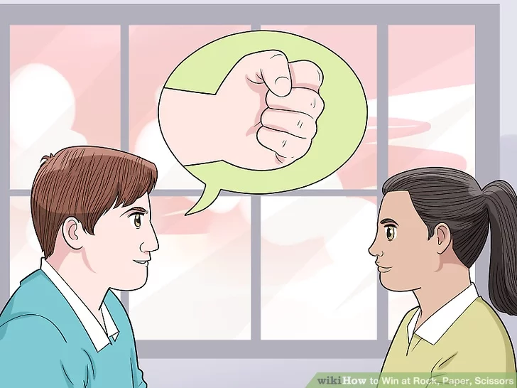

Playing a Rookie
1Throw paper against a male opponent. Inexperienced males statistically lead with rock most often for their first move in the game. By throwing paper on your first move against them, you’ll likely win.
- Rock is the statistically most often thrown move at 35.4%.
2Throw rock against a female opponent. Most women tend to lead with scissors, so if you throw out a rock on the first play of the game you can beat your opponent.
- Scissors is the throw that is least often used with only a 29.6% chance of being thrown in a Rock, Paper, Scissors game.
3Look for your opponent using the same move twice in a row. If your opponent plays the same move twice in a row, they’re not likely to use it a third time. So, you can assume they won’t throw that move. Put out a move that will give you either a win or stalemate, guaranteeing you won’t lose.
- For example, if your opponent throws out scissors twice in a row you can assume they won’t play it a third time. They’ll either play rock or paper. You should then throw paper because it will either beat your opponent’s rock or be a stalemate against their paper.
4Suggest a throw to your opponent when explaining the game. If your rookie opponent needs a quick review of the rules, use hand gestures to subconsciously suggest to them their first move.
- For example, when explaining that rock beats scissors, use the scissors gesture to show this (instead of rock), and then use the scissors gesture again when explaining that scissors beats paper. This will have the scissors gesture in your opponent’s mind and they’ll likely subconsciously play it first. Be prepared with a rock move to beat them.
Playing Experienced Opponents
1Play scissors or rock in the first round. Experienced players won’t throw a rock for their first move, so you should lead with scissors. This way you can beat their paper or tie if they also lead with scissors. Experienced players also think that beginners would most likely set down a rock so they would obviously do paper. And scissors beats paper so that would be a good move.
2Switch moves if you lose. If your opponent won a round, you have to predict whether they would use that move again, or if they would do a different one depending on their level on skill. Beginner- Probably the same move. Medium- They would most likely pull a rock. Expert- Most likely scissors, or whatever move you used last time. They want to surprise you so for example, if you did scissors and they beat you with rock, chances are they're doing scissors next so prepare to do rock.
- For example, if your opponent just beat you with a rock, you should switch your next move to paper to beat the rock that your opponent will likely use again.
 

3Look for tells. Opponents often have tells in the way they position their hands that will let you know what move they might be thinking about.
- For example, a tucked thumb in the crook of the index finger suggests that your opponent will throw rock.
- A loose hand is usually going to result in paper.
- A hand that has the first two fingers loose is likely going to be scissors.
4Telling your opponent your next move will have them thinking that you won’t actually throw that move. Then when you do actually throw that move, you’ll have a greater chance of beating them since they weren’t expecting it. But, if you keep doing it, they'll figure it out. Maybe once or twice, but no more. If you're not playing an experienced player, they'll probably think you're actually throwing what you announced.
- For example, tell your opponent you’re going to throw a rock. Since your opponent thinks you won’t actually lead with a rock, they’ll assume you’re going to play paper or scissors. Your opponent will then likely play scissors or rock to beat your paper or scissors. Then when you play rock, you either beat their scissors or draw a stalemate to their rock. In either case, you don’t lose!
5Watch for your opponent’s frustration. If your opponent is repeatedly losing they’re more likely to throw rock, since this is symbolically a very aggressive option that players rely on when losing.
- On the other hand, paper is seen as the most passive move so you won’t expect this from an opponent who’s losing.
6Go for paper to win by statistics. When you’re at a loss of what to do, throw paper. Because scissors is the statistically least often thrown move, and because rock is the most often thrown move, paper is the best way to go.
- Paper will beat rock, which is the most commonly thrown move. Scissors can beat paper, but because it’s the least often thrown move the chances of losing are much less likely.